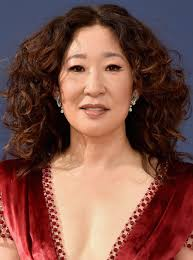

| inicio | biografia | logros | contacto |
SUS LOGROS |
|||
 |
|||
| Sandra Oh se hizo más conocida en Canadá por su actuación en la película canadiense Double Happiness, con la cual ganó el Premio Genie a la mejor actriz. Entre sus actuaciones en películas canadienses se incluyen Long Life, Happiness & Prosperity y Last Night, por las que ganó nuevamente el Genie a la mejor actriz. | |||
.jpg) |
 | ||
| derechos reservador, 2022 | |||